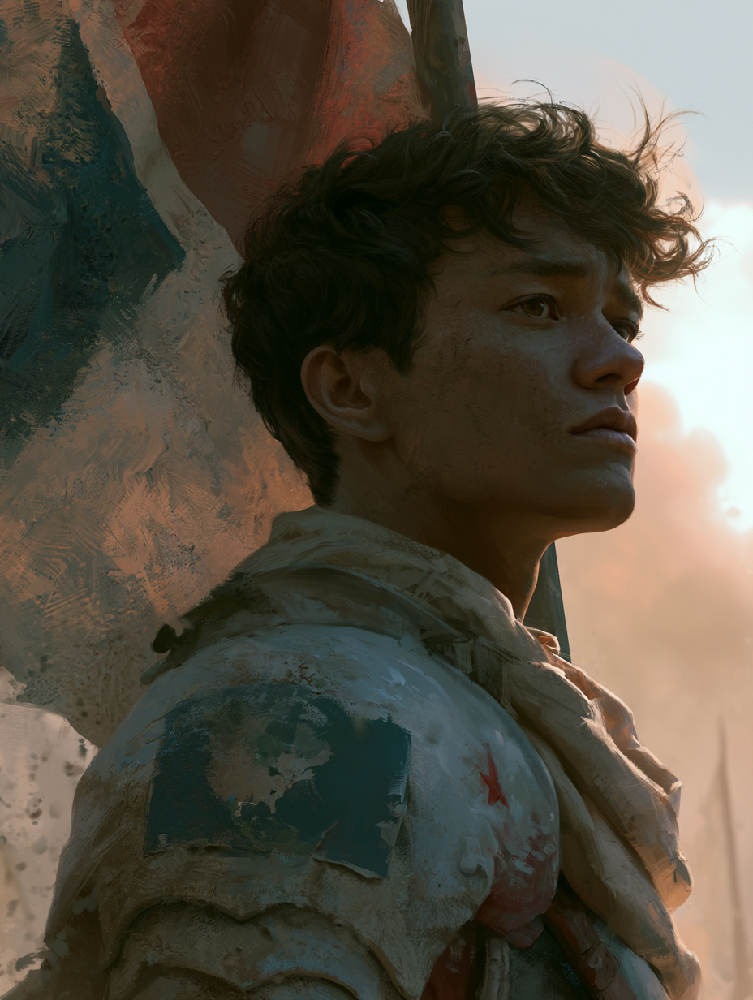

远古文本里反复出现同一类记载：非地球实体定期到访，在人类身上留下"标记"。这些记载一直被当作神话。
直到基因测序给出一个数字：人类DNA中，约8%来源不明。科学界叫它垃圾。
后来，有人在这8%里分离出12段休眠序列。每一段，对应一个外星签名。注入发生在远古。注入者不明。目的不明。
「母星召回计划」为此设立。只做一件事：在窗口期到来前，登记每一名携带者。
这个端口，是计划的内部设备。它不应出现在这里。
接入即受测。检测不可逆。

IRON-BLOODED TERRAN受测者（未登记）：
你刚刚通过了母星召回计划唯一真正的测试。
12段外星序列的携带者，没有一个能拒绝这次扫描——好奇心写在他们的基因里。
能对"你是谁"这个问题说不的，全档案库只有0.1%。
纯血地球人，确认。
兹征召你加入地球联盟军。窗口期开启之日，地球交给你了。
代号：铁血地球人
受测者 ：你的基因组中，未检测到任何外星签名。
在这个人均星际混血的档案库里，你是0.1%的纯血地球人。
档案局对你只有一条备注——
当窗口期开启、所有携带者都听见母星召唤的那天，留下来守住地球的，是你。
代号：铁血地球人